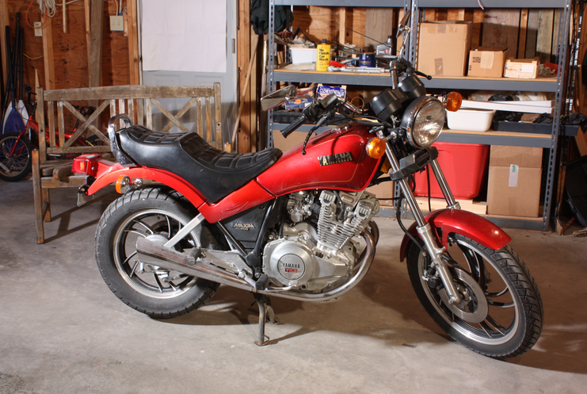
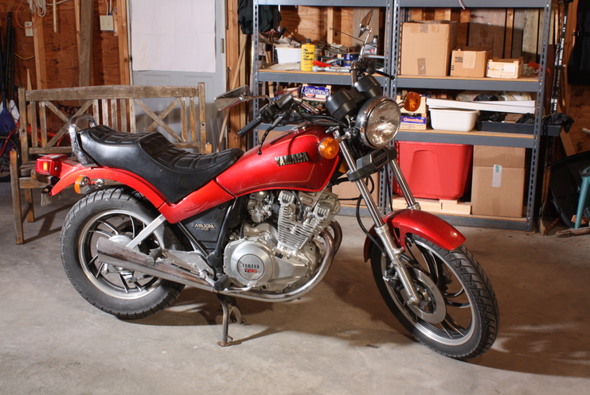

在两张照片里
找同一个点。
在左图选一个细节，再到右图的水平线上找它。把右图的点挪动一个像素，看看距离会差多少。


左图局部
右图局部
中心十字为当前像素。右图选点后可对照纹理。正在载入参考视差…
你的视差—
你的深度—
参考深度—
深度偏差—
怎样读数？为什么有些点无法匹配？
视差 d 是左、右像素横坐标之差。使用这组照片的真实标定，深度 Z = f × B / (d + doffs)，其中 f 为 999.421 px，B 为 0.193001 m，主点偏移 doffs 为 32.778 px。偏差为你的估计减去参考值。虚线标示同一扫描行，这组校正照片仍有不到半像素的垂直残差。
青色圆圈表示你的选择，显示参考位置后，黄色方框标出数据集的位置。遮挡点在另一视角不可见，缺少参考的像素也不计分。用 Tab 聚焦照片后可用方向键微调。
照片与标定来自 Scharstein 等人的 Middlebury 2014 Stereo Datasets，Motorcycle 四分之一分辨率。原始数据与论文 · 数据处理说明